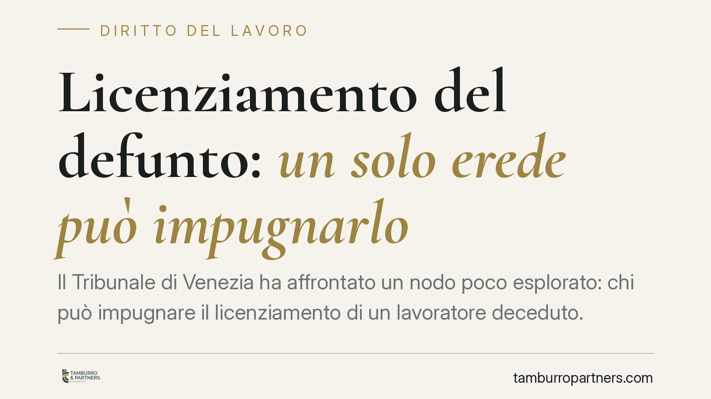

Licenziamento del defunto: un solo erede può impugnarlo
Il Tribunale di Venezia ha affrontato un nodo poco esplorato: chi può impugnare il licenziamento di un lavoratore deceduto. La risposta è che basta un singolo erede ad attivare la tutela nei termini di decadenza. Il credito risarcitorio ottenuto, però, non resta a lui: entra nella comunione ereditaria e va diviso tra tutti i coeredi secondo le quote.

Il caso
Un lavoratore viene licenziato ma muore prima di poter impugnare il recesso. Uno solo dei suoi eredi decide di agire in giudizio entro i termini di legge. Si pone allora una duplice domanda: quell'erede può impugnare da solo il licenziamento? E se ottiene il risarcimento, lo incassa per intero o deve dividerlo con gli altri coeredi?
Il Tribunale di Venezia ha distinto nettamente i due profili. La soluzione è coerente con i principi civilistici, ma vale la pena spiegarla perché mescola diritto del lavoro e diritto successorio.
*(Si richiama la pronuncia come Trib. Venezia, sentenza da verificarsi negli estremi: numero e data non risultano consolidati nelle fonti divulgative.)*
Inquadramento normativo
Il primo profilo riguarda l'impugnazione. L'art. 6 della L. 604/1966 impone di impugnare il licenziamento, a pena di decadenza, entro 60 giorni dalla comunicazione, con atto scritto. Si tratta di un termine di decadenza, non di prescrizione: una differenza sostanziale. La prescrizione estingue il diritto per inerzia prolungata ed è soggetta a sospensioni e interruzioni; la decadenza, invece, è più rigida e impone il compimento di un atto preciso entro un termine fisso, non prorogabile.
Il potere di impugnare rientra tra le situazioni che si trasmettono agli eredi. Trattandosi di facoltà esercitabile da ciascun coerede nell'interesse comune, l'iniziativa di un solo erede è sufficiente a evitare la decadenza e a conservare il diritto per tutti. Gli altri coeredi non perdono nulla per non aver impugnato personalmente: l'atto di uno giova alla massa.
Il secondo profilo riguarda il risarcimento. Qui occorre precisione sul regime sanzionatorio. La condanna a quindici mensilità è una tutela indennitaria parametrata all'anzianità. A seconda della data di assunzione del lavoratore, essa trova fondamento nell'art. 18, comma 5, della L. 300/1970 (nella versione introdotta dalla L. 92/2012, c.d. riforma Fornero) per i rapporti anteriori al 7 marzo 2015, oppure nel D.Lgs. 23/2015 sulle tutele crescenti per le assunzioni successive. L'articolo in commento non chiarisce il regime applicabile: è un dato da verificare caso per caso, perché cambiano presupposti e meccanismo di calcolo.
La sorte del credito risarcitorio
Qui sta il punto più delicato. Il credito al risarcimento non appartiene all'erede che ha agito: sorge in capo al defunto e, con l'apertura della successione, entra nella comunione ereditaria (artt. 727 e seguenti c.c.).
Il credito pecuniario è per sua natura divisibile. Secondo l'orientamento prevalente, i crediti del de cuius si ripartiscono tra i coeredi pro quota, in proporzione alle rispettive quote ereditarie (art. 752 c.c. per i debiti, con principio simmetrico per i crediti). Non si tratta quindi di solidarietà attiva: l'erede che agisce non può pretendere l'intero per sé. Ottenuta la condanna, la somma andrà distribuita tra tutti gli eredi secondo le quote, in sede di divisione ereditaria o di accordo tra coeredi.
La formula divulgativa secondo cui «un solo erede incassa tutto» è quindi imprecisa: uno solo può *impugnare*, ma il *frutto economico* appartiene alla massa.
Implicazioni pratiche
Per chi eredita un rapporto di lavoro interrotto da un licenziamento contestabile, la lezione è duplice.
Sul piano dell'azione, non è necessario il consenso di tutti i coeredi per impugnare: l'iniziativa individuale è ammessa e protegge l'intero asse. Questo è prezioso quando il termine di 60 giorni incombe e i rapporti tra eredi sono complessi o conflittuali.
Sul piano economico, invece, chi agisce deve mettere in conto che il risultato andrà condiviso. È opportuno chiarire fin da subito con gli altri coeredi chi anticipa le spese di lite e come verrà ripartito l'eventuale risarcimento.
Cosa fare in concreto
- Verificare con urgenza la data della comunicazione di licenziamento: il termine di 60 giorni per l'impugnazione è di decadenza e non si recupera.
- Impugnare per iscritto anche se gli altri coeredi sono irreperibili o inerti: l'atto di uno conserva il diritto per tutti.
- Accertare la data di assunzione del lavoratore per capire se si applica l'art. 18 Stat. lav. (regime Fornero) o il D.Lgs. 23/2015 (tutele crescenti).
- Mettere per iscritto, tra coeredi, come anticipare le spese di causa e come ripartire il risarcimento secondo le quote.
- Pianificare la destinazione del credito nell'ambito della divisione ereditaria, per evitare contenzioso tra coeredi dopo la vittoria in giudizio.
Disclaimer
Contributo informativo a cura di Tamburro & Partners - Avv. Giuseppe Tamburro. Non costituisce parere legale.
Ogni storia di lavoro ha i suoi tempi.
Se gestisci HR e vuoi un confronto su contenzioso, ispezioni o licenziamenti, scrivi allo studio. Ti rispondiamo entro un giorno lavorativo.